01 / OVERVIEW派系概览
劳工、工厂、火车与火炮的工业帝国。 推荐首发领主：阿斯特拉戈斯。劳工与工业：用劳工维持工厂，经济分原材料 / 工业品；地狱熔炉与火车。
混沌 · 远程 / 炮兵
劳工与工业：用劳工维持工厂，经济分原材料 / 工业品；地狱熔炉与火车。
为什么玩它
炮兵与远程极强，阵营独特。
要注意什么
经济复杂，位置偏，外交差。
先把劳工经济跑通，再爆炮兵；火车是移动火力平台。
本页数值为 Patch 9.0.4 / Ultra 规模 / 0 级，不含科技、技能、装备、领主光环与战场增益。维护费是战役基础值，受难度、补给线与派系减免影响。
02 / RECOMMENDED推荐兵种
每个派系挑 6 个最值得先练、先招、先知道的名字。不是“唯一答案”，但能覆盖扛线、输出、机动和攻城。
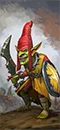
便宜炮灰。
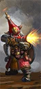
高破甲近距离齐射。
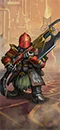
能扛能射。
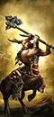
高机动高破甲。
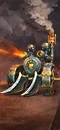
火车，火力与肉度兼备。

超远射程、拆墙。
03 / ROSTER完整兵种表
按类别展开。T 是招募等级；兵模是单位里的模型数；远程 / 射程一栏，前者是每 10 秒全队伤害，后者是射程。名将团单独列在最后。
领主与传奇领主8 个单位
| 兵种 | T | 兵模 | 生命 | 护甲 | 领导 | 速度 | 近攻 | 近防 | 武器 | 远程 / 射程 | 维护 |
|---|---|---|---|---|---|---|---|---|---|---|---|
Astragoth IronhandWizard Lord |
— | 1 | 6,824 | 130 | 85 | 60 | 60 | 50 | 480 | — | 250 |
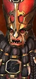 Drazhoath the AshenWizard Lord |
— | 1 | 5,520 | 125 | 85 | 32 | 45 | 65 | 430 | — | 250 |
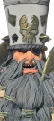 OverseerLord |
— | 1 | 4,958 | 120 | 80 | 32 | 55 | 55 | 430 | — | 250 |
Sorcerer-Prophet (Death)Wizard Lord |
— | 1 | 4,048 | 120 | 75 | 32 | 44 | 42 | 330 | 135 / 110m | 250 |
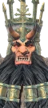 Sorcerer-Prophet (Fire)Wizard Lord |
— | 1 | 4,048 | 120 | 75 | 32 | 44 | 42 | 330 | 135 / 110m | 250 |
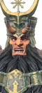 Sorcerer-Prophet (Hashut)Wizard Lord |
— | 1 | 4,048 | 120 | 75 | 32 | 44 | 42 | 330 | 135 / 110m | 250 |
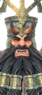 Sorcerer-Prophet (Metal)Wizard Lord |
— | 1 | 4,048 | 120 | 75 | 32 | 44 | 42 | 330 | 135 / 110m | 250 |
Zhatan the BlackLord |
— | 1 | 5,820 | 125 | 85 | 32 | 62 | 55 | 460 | — | 250 |
英雄7 个单位
| 兵种 | T | 兵模 | 生命 | 护甲 | 领导 | 速度 | 近攻 | 近防 | 武器 | 远程 / 射程 | 维护 |
|---|---|---|---|---|---|---|---|---|---|---|---|
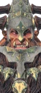 Bull Centaur Taur'rukMelee Specialist |
— | 1 | 6,280 | 70 | 80 | 70 | 48 | 42 | 460 | — | 250 |
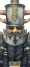 Daemonsmith Sorcerer (Death)Wizard |
— | 1 | 3,748 | 120 | 70 | 32 | 38 | 36 | 310 | 135 / 110m | 250 |
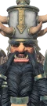 Daemonsmith Sorcerer (Fire)Wizard |
— | 1 | 3,748 | 120 | 70 | 32 | 38 | 36 | 310 | 135 / 110m | 250 |
Daemonsmith Sorcerer (Hashut)Wizard |
— | 1 | 3,748 | 120 | 70 | 32 | 38 | 36 | 310 | 135 / 110m | 250 |
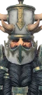 Daemonsmith Sorcerer (Metal)Wizard |
— | 1 | 3,748 | 120 | 70 | 32 | 38 | 36 | 310 | 135 / 110m | 250 |
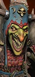 Gorduz BackstabberMelee Specialist |
— | 1 | 3,864 | 45 | 65 | 40 | 50 | 58 | 440 | — | — |
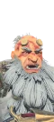 Infernal CastellanMissile Specialist |
— | 1 | 3,908 | 120 | 75 | 32 | 45 | 42 | 340 | 375 / 180m | 250 |
近战步兵9 个单位
| 兵种 | T | 兵模 | 生命 | 护甲 | 领导 | 速度 | 近攻 | 近防 | 武器 | 远程 / 射程 | 维护 |
|---|---|---|---|---|---|---|---|---|---|---|---|
Goblin LabourersSpear Infantry |
T1 | 180 | 9,000 | 0 | 32 | 33 | 12 | 16 | 20 | — | 37 |
Hobgoblin CutthroatsSword Infantry |
T1 | 140 | 8,120 | 25 | 45 | 35 | 32 | 28 | 28 | — | 100 |
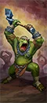 Orc LabourersGreat Axe Infantry |
T1 | 140 | 10,640 | 0 | 36 | 31 | 22 | 12 | 24 | — | 75 |
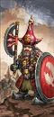 Chaos Dwarf WarriorsAxe Infantry |
T2 | 100 | 8,200 | 85 | 70 | 28 | 30 | 44 | 34 | — | 150 |
Chaos Dwarf Warriors (Great Weapons)Great Axe Infantry |
T2 | 100 | 8,200 | 85 | 70 | 28 | 30 | 34 | 38 | — | 162 |
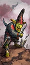 Hobgoblin Sneaky GitsSneaky Infantry |
T2 | 120 | 6,960 | 25 | 45 | 35 | 32 | 20 | 28 | 21 / 70m | 144 |
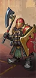 Infernal GuardAxe Infantry |
T3 | 100 | 9,000 | 100 | 80 | 26 | 32 | 56 | 42 | — | 237 |
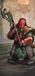 Infernal Guard (Great Weapons)Great Axe Infantry |
T3 | 100 | 9,000 | 100 | 80 | 26 | 32 | 46 | 46 | — | 250 |
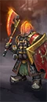 Infernal IronswornMagical Axe Infantry |
T3 | 100 | 10,600 | 125 | 85 | 26 | 42 | 64 | 42 | 43 / 70m | 350 |
远程步兵3 个单位
| 兵种 | T | 兵模 | 生命 | 护甲 | 领导 | 速度 | 近攻 | 近防 | 武器 | 远程 / 射程 | 维护 |
|---|---|---|---|---|---|---|---|---|---|---|---|
Chaos Dwarf BlunderbussesClose-Quarters Missile Infantry |
T2 | 80 | 6,160 | 85 | 65 | 28 | 28 | 32 | 34 | 49 / 90m | 225 |
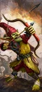 Hobgoblin ArchersMissile Infantry |
T2 | 120 | 6,960 | 25 | 40 | 35 | 18 | 24 | 28 | 13 / 140m | 125 |
Infernal Guard (Fireglaives)Hybrid Missile Infantry |
T3 | 80 | 6,800 | 100 | 75 | 26 | 30 | 42 | 34 | 33 / 145m | 300 |
怪步 / 飞行步兵1 个单位
| 兵种 | T | 兵模 | 生命 | 护甲 | 领导 | 速度 | 近攻 | 近防 | 武器 | 远程 / 射程 | 维护 |
|---|---|---|---|---|---|---|---|---|---|---|---|
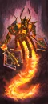 K'daai FirebornMonstrous Infantry |
T4 | 16 | 7,872 | 80 | 60 | 54 | 32 | 40 | 120 | — | 350 |
近战骑兵5 个单位
| 兵种 | T | 兵模 | 生命 | 护甲 | 领导 | 速度 | 近攻 | 近防 | 武器 | 远程 / 射程 | 维护 |
|---|---|---|---|---|---|---|---|---|---|---|---|
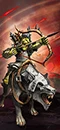 Hobgoblin Wolf Raiders (Bows)Missile Cavalry |
T2 | 60 | 4,140 | 45 | 40 | 92 | 18 | 18 | 24 | 17 / 140m | 143 |
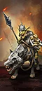 Hobgoblin Wolf Raiders (Spears)Cavalry |
T2 | 60 | 4,260 | 45 | 45 | 92 | 26 | 26 | 28 | — | 125 |
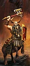 Bull Centaur RendersMonstrous Beasts |
T3 | 16 | 9,856 | 50 | 75 | 62 | 32 | 48 | 114 | — | 375 |
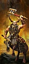 Bull Centaur Renders (Dual Axes)Monstrous Beasts |
T3 | 16 | 9,856 | 50 | 75 | 62 | 36 | 42 | 114 | — | 387 |
Bull Centaur Renders (Great Weapons)Monstrous Beasts |
T3 | 16 | 9,856 | 50 | 75 | 62 | 34 | 36 | 114 | — | 387 |
巨兽5 个单位
| 兵种 | T | 兵模 | 生命 | 护甲 | 领导 | 速度 | 近攻 | 近防 | 武器 | 远程 / 射程 | 维护 |
|---|---|---|---|---|---|---|---|---|---|---|---|
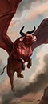 Great TaurusFlying Monster |
T3 | 1 | 6,668 | 50 | 60 | 80 | 46 | 28 | 450 | — | 275 |
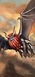 LammasuFlying Monster |
T3 | 1 | 6,048 | 45 | 70 | 85 | 36 | 44 | 450 | — | 300 |
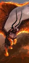 Bale TaurusFlying Monster |
T4 | 1 | 8,258 | 60 | 60 | 90 | 56 | 40 | 540 | — | 425 |
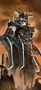 Chaos Siege GiantMonster |
T5 | 1 | 12,620 | 110 | 100 | 35 | 70 | 34 | 700 | — | 500 |
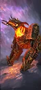 K'daai DestroyerColossal Monster |
T5 | 1 | 10,240 | 120 | 70 | 60 | 56 | 38 | 680 | — | 550 |
炮兵 / 战争机器9 个单位
| 兵种 | T | 兵模 | 生命 | 护甲 | 领导 | 速度 | 近攻 | 近防 | 武器 | 远程 / 射程 | 维护 |
|---|---|---|---|---|---|---|---|---|---|---|---|
Hobgoblin Bolt ThrowerField Artillery |
T2 | 8 | 5,456 | 25 | 50 | 22 | 10 | 6 | 28 | 83 / 320m | 162 |
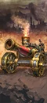 Magma CannonField Gun |
T2 | 1 | 5,010 | 70 | 55 | 20 | 20 | 10 | 170 | 500 / 380m | 262 |
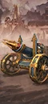 Deathshrieker Rocket LauncherRocket Launcher |
T3 | 1 | 5,010 | 70 | 55 | 20 | 20 | 10 | 170 | 185 / 420m | 325 |
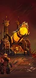 HellcannonSiege Artillery |
T3 | 1 | 3,957 | 30 | 70 | 20 | 18 | 14 | 28 | 378 / 420m | 300 |
Iron DaemonWar Machine |
T3 | 1 | 7,570 | 120 | 100 | 60 | 30 | 25 | 250 | 393 / 120m | 275 |
SkullcrackerWar Machine |
T3 | 1 | 7,530 | 120 | 100 | 60 | 40 | 25 | 350 | — | 300 |
Dreadquake MortarSiege Artillery |
T4 | 1 | 5,540 | 70 | 55 | 20 | 20 | 10 | 170 | 177 / 450m | 500 |
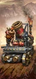 Iron Daemon – Dreadquake MortarWar Machine |
T5 | 1 | 7,600 | 120 | 100 | 55 | 30 | 25 | 250 | 177 / 450m | 775 |
 Skullcracker – Dreadquake MortarWar Machine |
T5 | 1 | 7,560 | 120 | 100 | 55 | 40 | 25 | 350 | 177 / 450m | 800 |
名将团8 个单位
| 兵种 | T | 兵模 | 生命 | 护甲 | 领导 | 速度 | 近攻 | 近防 | 武器 | 远程 / 射程 | 维护 |
|---|---|---|---|---|---|---|---|---|---|---|---|
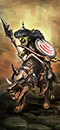 Oglah Khan's WolfboyzHybrid Missile Cavalry · Renown |
T2 | 60 | 4,260 | 60 | 65 | 92 | 34 | 34 | 28 | 17 / 140m | 218 |
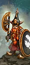 The Blazing Beards of Bazherak (Chaos Dwarf Warriors)Axe Infantry · Renown |
T2 | 100 | 8,200 | 85 | 80 | 28 | 38 | 54 | 34 | 43 / 70m | 238 |
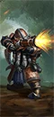 The Granite Guard (Chaos Dwarf Blunderbusses)Hybrid Missile Infantry · Renown |
T3 | 80 | 6,800 | 100 | 75 | 26 | 38 | 46 | 46 | 60 / 90m | 300 |
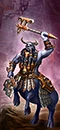 Hashut's Dark Ravagers (Bull Centaur Renders – Dual Axes)Monstrous Beasts · Renown |
T4 | 16 | 9,856 | 50 | 85 | 62 | 46 | 52 | 114 | 120 / 80m | 462 |
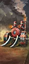 The Daemon's Tongue (Iron Daemon)War Machine · Renown |
T4 | 1 | 7,570 | 120 | 100 | 60 | 38 | 32 | 250 | 2,267 / 80m | 425 |
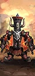 The Immortals (Infernal Ironsworn)Magical Axe Infantry · Renown |
T4 | 100 | 10,600 | 125 | 95 | 26 | 52 | 60 | 54 | — | 412 |
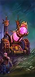 The Soul of Damnation (Hellcannon)Siege Artillery · Renown |
T4 | 1 | 3,957 | 30 | 80 | 20 | 24 | 19 | 28 | 378 / 420m | 388 |
 The Daemon's Tongue – Dreadquake MortarWar Machine · Renown |
T5 | 1 | 7,600 | 120 | 100 | 55 | 38 | 32 | 250 | 177 / 450m | 925 |
已排除“扩展名册（extended roster）”单位。数值为 Patch 9.0.4；不同版本可能微调。
04 / ARMY BUILD配兵思路
先按角色填槽，再按对手换兵。下面是一个通用的 20 槽骨架，以及用本页推荐兵种拼出的示例。
| 角色 | 建议槽位 | 说明 |
|---|---|---|
| 扛线 | 5–6 | 持盾 / 重甲步兵，任务是站住，不是杀敌。 |
| 远程 | 3–5 | 弓箭、火枪或炮兵；至少 2 队能打重甲。 |
| 机动 | 3–4 | 骑兵、战车、飞行单位；包抄、背冲、追逃。 |
| 巨兽 / 炮兵 | 1–3 | 破阵、斩将、攻城；别孤军深入。 |
| 英雄 | 1–3 | 法师 + 支援英雄，嵌入主力。 |
示例：4× 大地精割喉者 + 4× 混沌矮人雷铳手 + 3× 牛头人马（巨斧） + 领主 + 1 英雄，余下 3–4 槽按对手补破甲 / 反大型 / 炮兵。
重甲多带破甲（火枪、大炮、巨斧）；巨兽多带反大型（长戟、弩炮）；鼠人 / 绿皮多带范围伤害（吹息、炮兵、火焰）；骑兵多留 2 队长戟或反大型。不要一套配兵打到底。